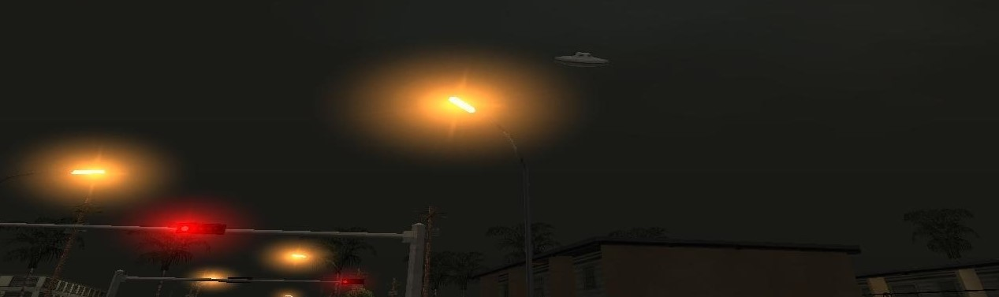

Unidentified Flying Object!
Around 19CET, an unidentified flying object were spotted above the airspace of GS9. Many civilians saw the UFO, oval form with a red light coming from his bottom, it is believed the so called "Aliens"...
